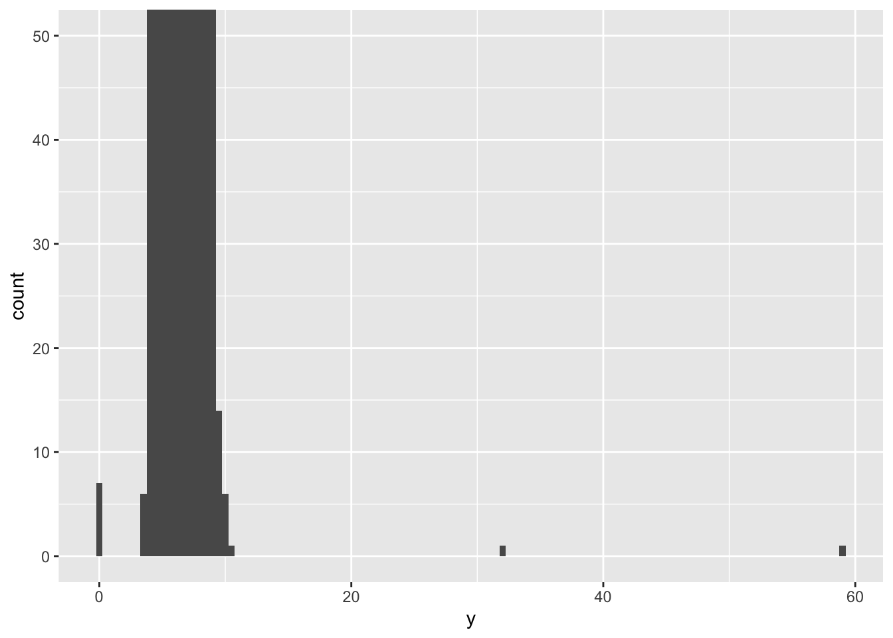

Code
library(tidyverse)We will be largely using the tidyverse suite of packages for data organisation, summarising, and plotting; see https://www.tidyverse.org/.
Let’s load that package now:
library(tidyverse)For this workshop we will use some tidyverse built in datasets. Each dataset shows the same values of four variables: country, year, population, and number of documented cases of TB (tuberculosis), but each dataset organizes the values in a different way.
table1# A tibble: 6 × 4
country year cases population
<chr> <dbl> <dbl> <dbl>
1 Afghanistan 1999 745 19987071
2 Afghanistan 2000 2666 20595360
3 Brazil 1999 37737 172006362
4 Brazil 2000 80488 174504898
5 China 1999 212258 1272915272
6 China 2000 213766 1280428583table2# A tibble: 12 × 4
country year type count
<chr> <dbl> <chr> <dbl>
1 Afghanistan 1999 cases 745
2 Afghanistan 1999 population 19987071
3 Afghanistan 2000 cases 2666
4 Afghanistan 2000 population 20595360
5 Brazil 1999 cases 37737
6 Brazil 1999 population 172006362
7 Brazil 2000 cases 80488
8 Brazil 2000 population 174504898
9 China 1999 cases 212258
10 China 1999 population 1272915272
11 China 2000 cases 213766
12 China 2000 population 1280428583table3# A tibble: 6 × 3
country year rate
<chr> <dbl> <chr>
1 Afghanistan 1999 745/19987071
2 Afghanistan 2000 2666/20595360
3 Brazil 1999 37737/172006362
4 Brazil 2000 80488/174504898
5 China 1999 212258/1272915272
6 China 2000 213766/1280428583For each of the sample tables, describe what each observation and each column represents.
The piping operation is a fundamental aspect of computer programming. The semantics of pipes is taking the output from the left-hand side and passing it as input to the right-hand side.
The R package magrittr introduced the pipe operator %>% and can be pronounced as “then”. In RStudio windows/Linux versions, press Ctrl+Shift+M to insert the pipe operator. On a Mac, use Cmd+Shift+M.
R also has its own pipe, |>, which is an alternative to %>%. You will see both used in this course. If you want to change the pipe inserted automatically with Ctrl+Shift+M, find on the menu Tools > Global Options, then click on Code and check the box that says “Use Native Pipe Operator”.
Try the following examples after loading the rangitikei dataset.
select()
Consider the study guide dataset rangitikei.txt (Recreational Use of the Rangitikei river) again. The first 10 rows of this dataset are shown below:
id loc time w.e cl wind temp river people vehicle
1 1 1 2 1 1 2 2 1 37 15
2 2 1 1 1 1 2 1 2 23 6
3 3 1 2 1 1 2 2 3 87 31
4 4 2 2 1 1 2 1 1 86 27
5 5 2 1 1 1 2 2 2 19 2
6 6 2 2 1 2 1 3 3 136 23
7 7 1 2 2 2 2 2 3 14 8
8 8 1 2 1 2 2 2 3 67 26
9 9 1 1 2 1 3 1 2 4 3
10 10 2 2 1 2 2 2 3 127 45library(tidyverse)
new.data <- my.data |>
select(people, vehicle)
names(new.data)[1] "people" "vehicle"my.data |>
select(people, vehicle) |>
ggplot() +
aes(x=people, y=vehicle) +
geom_point()
We select two columns and create a scatter plot with the above commands.
filter()
my.data |>
filter(wind==1) |>
select(people, vehicle) |>
ggplot() +
aes(x=people, y=vehicle) +
geom_point()
The above commands filter the data for the low wind days and plots vehicle against people.
arrange()
my.data |>
filter(wind==1) |>
arrange(w.e) |>
select(w.e, people, vehicle) w.e people vehicle
1 1 136 23
2 1 50 22
3 1 100 31
4 1 470 122
5 2 22 11mutate()
Assume that a $10 levy is collected for each vehicle. We can create this new levy column as follows.
my.data |>
mutate(levy = vehicle*10) |>
select(people, levy) |>
ggplot() +
aes(x = people, y=levy) +
geom_point()
Note that the pipe operation was used to create a scatter plot using the newly created column.
summarise()
my.data |>
summarise(total = n(),
avg = mean(people)
) total avg
1 33 71.72727We obtain the selected summary measures namely the total and the mean number of people. Try-
my.data |>
filter(wind == 1) |>
summarise(total = n(),
avg = mean(people)
) total avg
1 5 155.6group_by()
We obtain the wind group-wise summaries below:
my.data |>
group_by(wind) |>
summarise(total=n(),
avg=mean(people))# A tibble: 3 × 3
wind total avg
<int> <int> <dbl>
1 1 5 156.
2 2 26 59.7
3 3 2 19 There are many more commands such as the transmute function which conserves the only the needed columns. Try
my.data |>
group_by(wind, w.e) |>
transmute(total=n(),
avg=mean(people))# A tibble: 33 × 4
# Groups: wind, w.e [6]
wind w.e total avg
<int> <int> <int> <dbl>
1 2 1 18 72.1
2 2 1 18 72.1
3 2 1 18 72.1
4 2 1 18 72.1
5 2 1 18 72.1
6 1 1 4 189
7 2 2 8 31.8
8 2 1 18 72.1
9 3 2 1 4
10 2 1 18 72.1
# ℹ 23 more rowsA simple frequency table is found using count(). Try-
my.data |>
group_by(wind, w.e) |>
count(temp)# A tibble: 10 × 4
# Groups: wind, w.e [6]
wind w.e temp n
<int> <int> <int> <int>
1 1 1 1 1
2 1 1 3 3
3 1 2 3 1
4 2 1 1 4
5 2 1 2 12
6 2 1 3 2
7 2 2 2 6
8 2 2 3 2
9 3 1 2 1
10 3 2 1 1my.data |>
group_by(wind, w.e) |>
count(temp, river)# A tibble: 16 × 5
# Groups: wind, w.e [6]
wind w.e temp river n
<int> <int> <int> <int> <int>
1 1 1 1 1 1
2 1 1 3 3 3
3 1 2 3 3 1
4 2 1 1 1 1
5 2 1 1 2 1
6 2 1 1 3 2
7 2 1 2 1 3
8 2 1 2 2 2
9 2 1 2 3 7
10 2 1 3 3 2
11 2 2 2 1 2
12 2 2 2 3 4
13 2 2 3 2 1
14 2 2 3 3 1
15 3 1 2 2 1
16 3 2 1 2 1The count() is useful to check the balanced nature of the data when many subgroups are involved.
Using table1, compute rate of TB cases per 10,000 and the total cases per year
table1 |>
mutate(rate = cases / population * 10000)# A tibble: 6 × 5
country year cases population rate
<chr> <dbl> <dbl> <dbl> <dbl>
1 Afghanistan 1999 745 19987071 0.373
2 Afghanistan 2000 2666 20595360 1.29
3 Brazil 1999 37737 172006362 2.19
4 Brazil 2000 80488 174504898 4.61
5 China 1999 212258 1272915272 1.67
6 China 2000 213766 1280428583 1.67 table1 |>
group_by(year) |>
summarize(total_cases = sum(cases))# A tibble: 2 × 2
year total_cases
<dbl> <dbl>
1 1999 250740
2 2000 296920For table2, write pseudo-code for how you would perform the following actions. Sketch/describe how you would do these. You haven’t yet learned all the functions you’d need to actually perform these operations, but you should still be able to think through the transformations you’d need.
Extract the number of TB cases per country per year.
Extract the matching population per country per year.
Divide cases by population, and multiply by 10000.
Store back in the appropriate place.
We will use the built in dataset on diamond price and measurements. See?diamonds more information.
Outliers are observations that are unusual; data points that don’t seem to fit the pattern. Sometimes outliers are data entry errors, sometimes they are simply values at the extremes that happened to be observed in this data collection, and other times they suggest important new discoveries.
Describe the distribution of the y variable from the diamonds dataset.
ggplot(diamonds, aes(x = y)) +
geom_histogram(binwidth = 0.5)
The only evidence of outliers is the unusually wide limits on the x-axis.
There are so many observations in the common bins that the rare bins are very short, making it very difficult to see them (although maybe if you stare intently at 0 you’ll spot something). We can change the binwidth= to help with this. We can also zoom in on the y axis using coord_cartesian().
ggplot(diamonds, aes(x = y)) +
geom_histogram(binwidth = 0.5) +
coord_cartesian(ylim = c(0, 50)) # also has an xlim() option
Make a new dataset that includes these unusual values using dplyr.
unusual <- diamonds |>
filter(y < 3 | y > 20) |>
select(price, x, y, z) |>
arrange(y)
unusual# A tibble: 9 × 4
price x y z
<int> <dbl> <dbl> <dbl>
1 5139 0 0 0
2 6381 0 0 0
3 12800 0 0 0
4 15686 0 0 0
5 18034 0 0 0
6 2130 0 0 0
7 2130 0 0 0
8 2075 5.15 31.8 5.12
9 12210 8.09 58.9 8.06How many diamonds are 0.99 carat? How many are 1 carat? What do you think is the cause of the difference?
# your code goes hereWhat does na.rm = TRUE do in mean() and sum()?
# your code goes hereMost real analyses will require at least a little tidying. You’ll begin by figuring out what the underlying variables and observations are. Sometimes this is easy; other times you’ll need to consult with the people who originally generated the data. Next, you’ll pivot your data into a tidy form, with variables in the columns and observations in the rows.
The billboard dataset records the billboard rank of songs in the year 2000:
billboard# A tibble: 317 × 79
artist track date.entered wk1 wk2 wk3 wk4 wk5 wk6 wk7 wk8
<chr> <chr> <date> <dbl> <dbl> <dbl> <dbl> <dbl> <dbl> <dbl> <dbl>
1 2 Pac Baby… 2000-02-26 87 82 72 77 87 94 99 NA
2 2Ge+her The … 2000-09-02 91 87 92 NA NA NA NA NA
3 3 Doors D… Kryp… 2000-04-08 81 70 68 67 66 57 54 53
4 3 Doors D… Loser 2000-10-21 76 76 72 69 67 65 55 59
5 504 Boyz Wobb… 2000-04-15 57 34 25 17 17 31 36 49
6 98^0 Give… 2000-08-19 51 39 34 26 26 19 2 2
7 A*Teens Danc… 2000-07-08 97 97 96 95 100 NA NA NA
8 Aaliyah I Do… 2000-01-29 84 62 51 41 38 35 35 38
9 Aaliyah Try … 2000-03-18 59 53 38 28 21 18 16 14
10 Adams, Yo… Open… 2000-08-26 76 76 74 69 68 67 61 58
# ℹ 307 more rows
# ℹ 68 more variables: wk9 <dbl>, wk10 <dbl>, wk11 <dbl>, wk12 <dbl>,
# wk13 <dbl>, wk14 <dbl>, wk15 <dbl>, wk16 <dbl>, wk17 <dbl>, wk18 <dbl>,
# wk19 <dbl>, wk20 <dbl>, wk21 <dbl>, wk22 <dbl>, wk23 <dbl>, wk24 <dbl>,
# wk25 <dbl>, wk26 <dbl>, wk27 <dbl>, wk28 <dbl>, wk29 <dbl>, wk30 <dbl>,
# wk31 <dbl>, wk32 <dbl>, wk33 <dbl>, wk34 <dbl>, wk35 <dbl>, wk36 <dbl>,
# wk37 <dbl>, wk38 <dbl>, wk39 <dbl>, wk40 <dbl>, wk41 <dbl>, wk42 <dbl>, …In this dataset, each observation is a song. The first three columns (artist, track and date.entered) are variables that describe the song. Then we have 76 columns (wk1-wk76) that describe the rank of the song in each week. Here, the column names are one variable (the week) and the cell values are another (the rank).
Use pivot_longer() to tidy this data
# your code goes hereThere are four types of joins, we will illustrate them using a simple example:
df1 <- tibble(x = c(1, 2), y = 2:1)
df2 <- tibble(x = c(3, 1), a = 10, b = "a")df1 %>% inner_join(df2) Joining with `by = join_by(x)`# A tibble: 1 × 4
x y a b
<dbl> <int> <dbl> <chr>
1 1 2 10 a df1 %>% left_join(df2)Joining with `by = join_by(x)`# A tibble: 2 × 4
x y a b
<dbl> <int> <dbl> <chr>
1 1 2 10 a
2 2 1 NA <NA> df1 %>% right_join(df2)Joining with `by = join_by(x)`# A tibble: 2 × 4
x y a b
<dbl> <int> <dbl> <chr>
1 1 2 10 a
2 3 NA 10 a df2 %>% left_join(df1)Joining with `by = join_by(x)`# A tibble: 2 × 4
x a b y
<dbl> <dbl> <chr> <int>
1 3 10 a NA
2 1 10 a 2df1 %>% full_join(df2)Joining with `by = join_by(x)`# A tibble: 3 × 4
x y a b
<dbl> <int> <dbl> <chr>
1 1 2 10 a
2 2 1 NA <NA>
3 3 NA 10 a